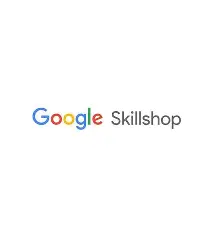
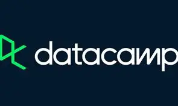

Google Sheets Data Analysis
Mastered basic formulas (VLOOKUP, SUMIF, COUNTIF), data validation rules, and conditional formatting to clean and visualize raw data automatically.
A reflection on independent discovery, digital productivity, and continuous skill development.
In today's digital-first environment, cloud collaboration and real-time document management are no longer optional—they are fundamental skills across modern education, hybrid workplaces, and personal productivity. Google Workspace serves as the digital backbone for millions of teams worldwide.
Understanding how to effectively leverage tools like Google Drive, Docs, Sheets, Forms, and Meet allows individuals to communicate clearly, automate repetitive tasks, and collaborate seamlessly across geographic boundaries. Selecting this topic provided a practical foundation that directly translates to academic success and future professional environments.
While working on this project, I stepped beyond basic usage and explored advanced features without direct guided instruction. Through self-directed research, exploring official documentation, and trial-and-error testing, I learned:
Mastered basic formulas (VLOOKUP, SUMIF, COUNTIF), data validation rules, and conditional formatting to clean and visualize raw data automatically.
Learned how to construct self-grading quizzes in Google Forms using custom answer keys, conditional page branching based on user responses, and response summary analytics.
Discovered how seamlessly Workspace tools interact—such as embedding live updating Sheets charts directly into Slides presentations or scheduling Meet links directly from Calendar.
While this project laid a strong foundation, Google Workspace offers advanced developer and automation tools that I aim to explore further:
Enroll in free self-paced courses on Google Skillshop to work toward earning recognized credentials, such as the Google Workspace Development or Educator certifications.
Subscribe to the official Google Workspace Updates Blog to stay updated on newly released AI features (like Gemini for Workspace), updates, and security protocols.
Apply new knowledge by building real-world solutions for personal productivity, student clubs, or community projects to reinforce self-taught concepts.
"Independent learning shifted my perspective from being a passive user of software to an active problem solver. Navigating technical obstacles independently proved that adaptability and resourcefulness are far more valuable than simply memorizing menu options."
Taking full ownership of my learning journey during this project was both challenging and empowering. When faced with formatting bugs or formula errors in Sheets, researching solutions through technical documentation and user forums strengthened my critical thinking skills.
This experience taught me that lifelong learning is an iterative process. Software tools continuously evolve, but the ability to self-teach, adapt, and critically evaluate new digital workflows is a skill that will remain valuable throughout my academic and professional career.
To support continuous development and stay updated with Google Workspace, here are five industry-recognized learning platforms and official resources:

Google’s official self-paced learning platform offering free courses and professional certifications across Google Workspace and Google Cloud tools.
Explore Skillshop →Offers structured professional specialization courses developed directly by Google, covering IT Support, Data Analytics, and Google Workspace Administration.
View Coursera Courses →
DataCamp is an online learning platform that teaches data science, analytics, and AI skills through interactive, in‑browser courses, real‑world projects, and certifications used by over 19 million learners and 5,000+ companies.
Explore DataCamp →FreeCodeCamp is a non-profit organization that offers free coding lessons and projects to help people learn web development and data science skills.
Explore FreeCodeCamp →GitHub is a web-based platform for version control and collaboration, where developers can host and review code, manage projects, and build software together. GitHub also have huge amount of resources for developers.
Visit Our Repositories :) →